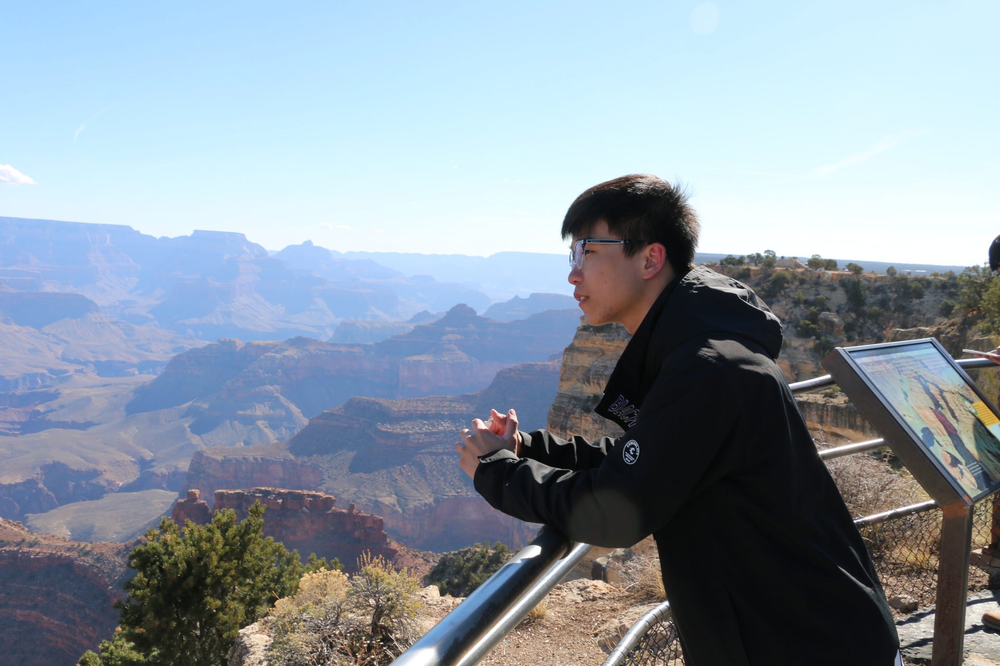
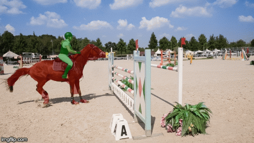
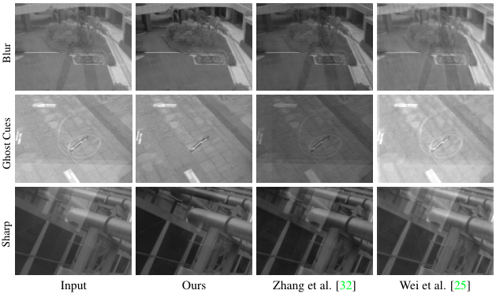
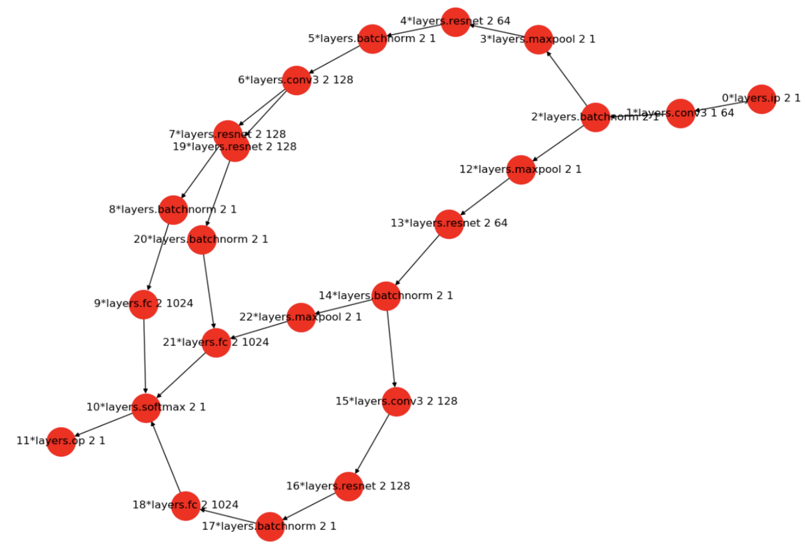
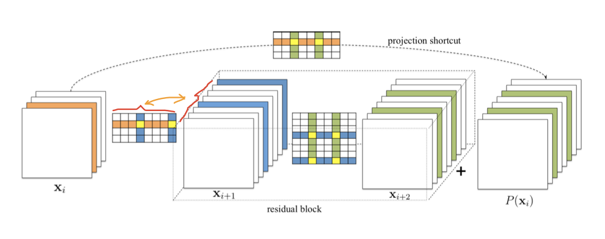
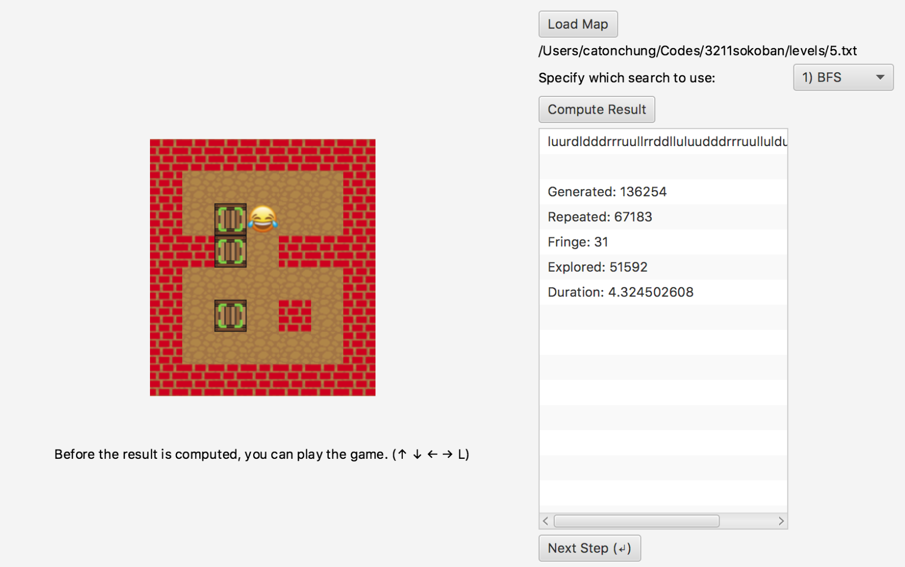
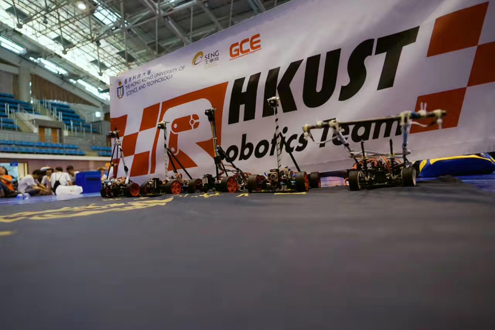
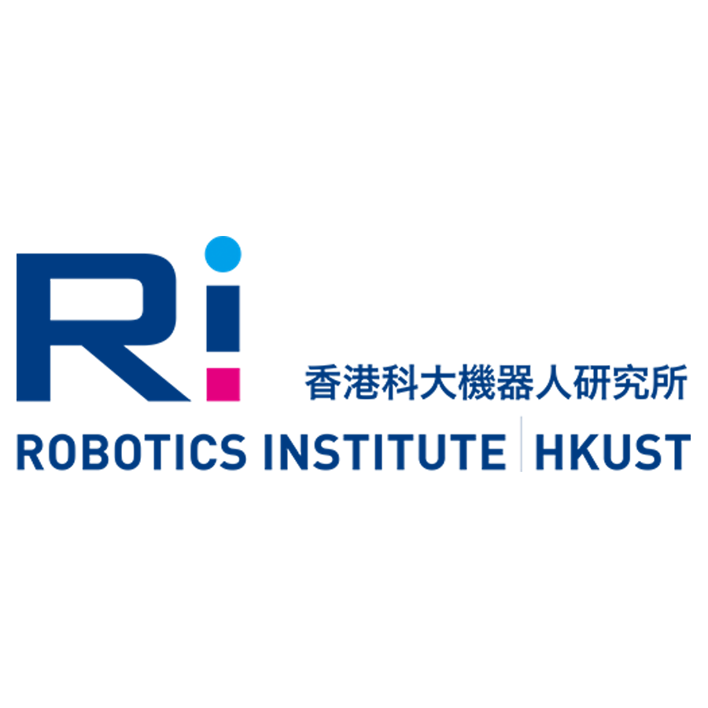

Xuhua HUANGUndergraduate (Final Year)Computer Science and Engineering Hong Kong University of Science and Technology, Hong Kong Email: xhuangat [at] connect [dot] ust [dot] hk
|
 |


{kind=link}
Biography
I am currently a final year undergraduate student majoring in Computer Science and minoring in Big Data Technology in the Hong Kong University of Science and Technology. I was an international exchange student in the Washington University and Tsinghua University.
My undergraduate Final Year Project supervisor is Prof. Chi Keung Tang. I am also working as a Research Assistant under supervision of Prof. Qifeng Chen and SenseTime Group Limited. Previously, I was a research intern at Tencent YouTu Lab advised by Prof. Yu-Wing Tai. During 2018 - 2019, I had the honor to work as a Data Analytics & Cloud Team intern in Palo Alto Network in Silicon Valley, United States. My bachelor advisor is Prof. Yi Ke.
My research interest includes Computer Vision, Machine Learning and Data Science. I am applying for Master degree (FALL 2020).
Publications
|  | Xuhua Huang*, Jiarui Xu*, Yu-Wing Tai, Chi Keung Tang (* Equal contribution) "Fast Video Object Segmentation with Dynamic Time-Evolving Templates and Temporal Aggregation Network" Under Review , 2020. Area: Segmentation, Motion and Tracking Abstract: Present an efficiently online pipeline and contribute novel Temporal Aggregation Network and Dynamic Time-evolving Template Matching mechanism for Video Object Segmentation. Achieve a new state-of-the-art performance in both accuracy and speed without bells and whistles (237x faster speed compared with current state-of-the-art) |
|  | Chenyang Lei, Xuhua Huang, Qiong Yan, Qifeng Chen "Reflection Removal with Polarization and Perceptual NCC" Under Review , 2020. Area: Computational Photography, Physics-based Vision, Deep Learning Abstract: Observing the linearity between reflection and mixed image on raw space, we propose a deep learning method for reflection removal based on polarized data along with a novel PNCC loss. Our method doesn't impose any assumption on the appearance of reflection. Experiments show that our method outperforms all SOTA methods and has better generalization. |
Projects
|  | Neural Architecture Search with Bayesian Optimization, 2018.
Advisor: Prof. Roman Garnett Location: Washington University, United States Area: Bayesian Optimization, Machine Learning |
|  | Neural Network Pruning and Object Detection Model Optimization, 2018.
Advisor: Prof. Yu-Wing Tai Location: Tencent YouTu Lab, Shenzhen, China Area: Object Detection, Network Optimization[Github] |
|  | Sokoban Game Solver with Search Algorithms and Reinforcement Learning (Q-Learning), 2017.
Advisor: Prof. Yangqiu Song Location: Hong Kong Area: Artificial Intelligence, Machine Learning |
|  | Intelligent Robot Design and The NXP® Cup Intelligent Car Race, 2017.
Advisor: Prof. Kam Tim WOO Location: Hong Kong Area: Robotics, Image Processing |
Education Background
|
B. Eng. Computer Science and Engineering Big Data Technology Sep 2015 - Jun 2020 | Hong Kong University of Science and Technology |

|
|
Exchange Computer Science Jan 2018 - May 2018 | Washington University |

|
|
Exchange Computer Software Engineering May 2017 | Tsinghua University |
Research & Work Experience
|
Research Assistant SenseTime Group Limited in Hong Kong Mar 2019 - Nov 2019 | Advisor: Qiong Yan and Prof. Qifeng Chen |
|
|
Intern in Data Analytics & Cloud Team Palo Alto Network in Mountain View, CA Sep 2018 - Jun 2019 | Advisor: Dr. May Wang and Ran Xia |

|
Research Intern Tencent YouTu Lab in Shenzhen May 2018 - Aug 2018 | Advisor: Prof. Yu-Wing Tai |
|
Bachelor Research Hong Kong University of Science and Technology in Hong Kong May 2019 - Nov 2019 | Advisor: Prof. Chi Keung Tang Mar 2019 - Nov 2019 | Advisor: Prof. Qifeng Chen Jun 2016 - Aug 2016 | Advisor: Prof. Pan Hui |
|
|
Software Developer | Microsoft Student Partner Microsoft Corporation in Hong Kong May 2017 - Aug 2017 |

|
|
Research Assistant HKUST Robotics Institute | HKUST Robotics Team in Hong Kong Dec 2016 - Sep 2017 | Advisor: Prof. Kam Tim WOO |
 |
Extra-Curricular
| Visiting Student at Microsoft Research Asia (MSRA), Beijing, China | 08/2017 |
| Microsoft Student Partner @ Microsoft, Hong Kong | 11/2016-06/2017 |
| Participants at HackUST, Hong Kong | 04/2017 |
| External Manager at China Entrepreneur Network, Hong Kong | 02/2016-02/2017 |
| Co-organizer and Volunteer at Cambodia Service Trip, Cambodia | 03/2016-06/2016 |
Selected Honors & Awards
| Dean's List, HKUST |
| University's Scholarship for Continuing Undergraduate Student(Top 10%), HKUST |
| HKUST Study Abroad Scholarship, HKUST |
| President’s 1-HKUST Student Life Award, HKUST |
| HKUST Community Engagement Award, HKUST |
| 1st Runner-up from HKUST Robot Competition, HKUST |
| Reaching Out Award, HKSAR Government |
| Talent Development Scholarship, HKSAR Government |
| Elite 12 Award in Microsoft Imagine Cup Challenge, Microsoft Corporation |
| Microsoft Azure Fundamental Certificate, Microsoft Corporation |
| Coursera Machine Learning Course Certificate, Stanford University |